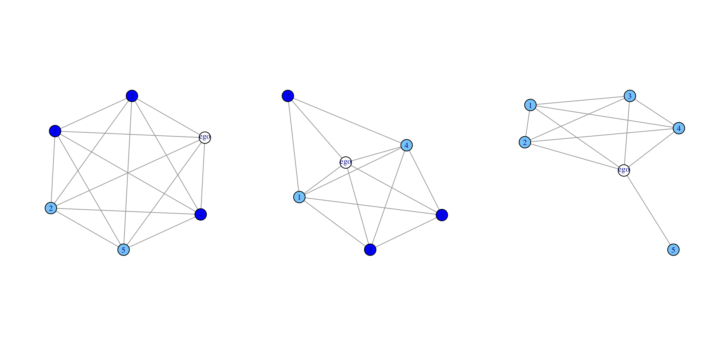

Cover the basics of ego network data, utilizing the egor package
Construct and visualize ego networks
Focus on substantive questions related to homophily
Ego network data are based on a sample of individuals and are commonly used in the social sciences.
Each respondent (ego) reports on the people (alters) they are connected to, providing the local network around the focal respondent.
Ego network data offer only pieces of the whole network
Ego network data can be structured in a number of ways but will generally have 4 kinds of information:
1, demographic, behavioral, etc. information on the egos
2, demographic, behavioral, etc. information on the named alters
3, information about the relationship between ego and alter
4, information about the relationships between the alters.
Work with ego network data from the GSS(General Social Survey)
a file with the ego attributes
a file with the alter(other) attributes
a file with the alter-alter ties
First 10 rows of the ego data frame
CASEID AGE EDUC RACE SEX HAPPY NUMGIVEN
1 19850001 33 16 white male 2 6
2 19850002 49 19 white male 2 6
3 19850003 23 16 white female 2 5
4 19850004 26 20 white female 2 5
5 19850005 24 17 white female 2 5
6 19850006 45 17 white male 2 4
7 19850007 44 18 white female 2 6
8 19850008 56 12 white female 2 5
9 19850009 85 7 white female 2 2
10 19850010 65 12 white female 2 2# each row corresponds to a different named alter
# Each alter is denoted by an ALTERID (CASEID : ALTERID = 1:N)
# KIN : 1(True) if ego is relatives with that alter
# respondent 1 (CASEID = 19850001) names 5 alters. The first alter (ALTERID = 1) is 32, has 18 years of education, and is not kin to ego.
alter_dat[1:10, c("CASEID", "ALTERID", "AGE", "EDUC", "RACE", "SEX", "KIN")] CASEID ALTERID AGE EDUC RACE SEX KIN
1 19850001 1 32 18 white male 0
2 19850001 2 29 16 white female 1
3 19850001 3 32 18 white male 0
4 19850001 4 35 16 white male 1
5 19850001 5 29 13 white female 0
6 19850002 1 42 12 white female 1
7 19850002 2 44 18 white male 0
8 19850002 3 45 16 white male 0
9 19850002 4 40 12 white female 0
10 19850002 5 50 18 white male 0 CASEID ALTER1 ALTER2 WEIGHT
1 19850001 1 2 2
2 19850001 1 3 1
3 19850001 1 4 1
4 19850001 1 5 1
5 19850001 2 3 2
6 19850001 2 4 2
7 19850001 2 5 2
8 19850001 3 4 1
9 19850001 3 5 1
10 19850001 4 5 1# The function we will use to construct the egor object is `egor()`. The `egor()` function assumes that you are inputting the data using three separate files.
egonetlist <- egor(alters = alter_dat, # alter attributes data frame
egos = ego_dat, # ego attributes data frame
aaties = alteralter_dat, # alter-alter tie data frame
alter_design = list(max = 5), # list of arguments to specify nomination information from survey
# list of variable names corresponding to key columns
ID.vars = list(ego = "CASEID", alter ="ALTERID",
source = "ALTER1", target = "ALTER2")
) # EGO data (active): 1,531 × 13
.egoID AGE EDUC RACE SEX RELIG AGE_CATEGORICAL EDUC_CATEGORICAL NUMGIVEN
* <int> <int> <int> <chr> <chr> <chr> <chr> <chr> <int>
1 1.99e7 33 16 white male jewi… 30s College 6
2 1.99e7 49 19 white male cath… 40s Post Graduate 6
3 1.99e7 23 16 white fema… jewi… 20s College 5
4 1.99e7 26 20 white fema… jewi… 20s Post Graduate 5
5 1.99e7 24 17 white fema… cath… 20s Post Graduate 5
# ℹ 1,526 more rows
# ℹ 4 more variables: HAPPY <int>, HEALTH <int>, PARTYID <int>, WTSSALL <dbl>
# ALTER data: 4,483 × 12
.altID .egoID AGE EDUC RACE SEX RELIG AGE_CATEGORICAL EDUC_CATEGORICAL
* <int> <int> <int> <dbl> <chr> <chr> <chr> <chr> <chr>
1 1 19850001 32 18 white male jewi… 30s Post Graduate
2 2 19850001 29 16 white fema… prot… 20s College
3 3 19850001 32 18 white male jewi… 30s Post Graduate
# ℹ 4,480 more rows
# ℹ 3 more variables: TALKTO <int>, SPOUSE <int>, KIN <int>
# AATIE data: 4,880 × 4
.egoID .srcID .tgtID WEIGHT
* <int> <int> <int> <int>
1 19850001 1 2 2
2 19850001 1 3 1
3 19850001 1 4 1
# ℹ 4,877 more rowsThe density scores are stored in the object as density. For example, respondent 1 (19850001) has 5 alters and all 10 possible ties exist (density = 1), while respondent 2 (1950002) has 5 alters but only 8 ties exist (density = .8). To check:
CASEID ALTER1 ALTER2 WEIGHT
1 19850001 1 2 2
2 19850001 1 3 1
3 19850001 1 4 1
4 19850001 1 5 1
5 19850001 2 3 2
6 19850001 2 4 2
7 19850001 2 5 2
8 19850001 3 4 1
9 19850001 3 5 1
10 19850001 4 5 1 CASEID ALTER1 ALTER2 WEIGHT
11 19850002 1 2 1
12 19850002 1 3 1
13 19850002 1 4 2
14 19850002 1 5 2
15 19850002 2 4 2
16 19850002 3 4 2
17 19850002 3 5 1
18 19850002 4 5 2Now, let’s take a look at the first three ego networks.
$`19850001`
IGRAPH 61c1b66 UN-- 5 10 --
+ attr: .egoID (g/n), name (v/c), AGE (v/n), EDUC (v/n), RACE (v/c),
| SEX (v/c), RELIG (v/c), AGE_CATEGORICAL (v/c), EDUC_CATEGORICAL
| (v/c), TALKTO (v/n), SPOUSE (v/n), KIN (v/n), WEIGHT (e/n)
+ edges from 61c1b66 (vertex names):
[1] 1--2 1--3 1--4 1--5 2--3 2--4 2--5 3--4 3--5 4--5
$`19850002`
IGRAPH fe09c91 UN-- 5 8 --
+ attr: .egoID (g/n), name (v/c), AGE (v/n), EDUC (v/n), RACE (v/c),
| SEX (v/c), RELIG (v/c), AGE_CATEGORICAL (v/c), EDUC_CATEGORICAL
| (v/c), TALKTO (v/n), SPOUSE (v/n), KIN (v/n), WEIGHT (e/n)
+ edges from fe09c91 (vertex names):
[1] 1--2 1--3 1--4 1--5 2--4 3--4 3--5 4--5
$`19850003`
IGRAPH ea7f1da UN-- 5 6 --
+ attr: .egoID (g/n), name (v/c), AGE (v/n), EDUC (v/n), RACE (v/c),
| SEX (v/c), RELIG (v/c), AGE_CATEGORICAL (v/c), EDUC_CATEGORICAL
| (v/c), TALKTO (v/n), SPOUSE (v/n), KIN (v/n), WEIGHT (e/n)
+ edges from ea7f1da (vertex names):
[1] 1--2 1--3 1--4 2--3 2--4 3--4Now, let’s plot a couple of example networks, focusing on the first 3 ego networks.
# somewhat more difficult task than with a single network
# defind a function to set the color for each network
plotfunc_colorgender <- function(nets){
# Arguments:
# nets: ego network of interest
# extracting the attribute from the ego network:
cols <- vertex_attr(nets, "SEX")
# now we use an ifelse statement to set color,
# light sky blue if gender equals female, blue otherwise:
cols <- ifelse(cols == "female", "lightskyblue", "blue")
# plotting ego network with nodes colored based on gender:
plot(nets, vertex.color = cols)
}plotfunc_colorgender() over the first three ego networks.We can see that the third ego network is homogenous in terms of gender, but the first two are quite heterogeneous. We also see different patterns of ties between the named alters. The first ego network is complete, with a tie between all alter-alter pairs. In contrast, the third ego network is less dense, with one alter (id = 5) completely disconnected from the rest of the alters.
We now move to our substantive questions about the strength and patterning of homophily. We will focus on gender and racial homophily, comparing across kin and non-kin ties. The first part of the analysis (Section 6.3.1 and 6.3.2) will utilize the ego-alter information, looking at the level of similarity between ego and alter for each ego network.
We will begin by calculating ego-level summary measures. Our first measure of interest, calculated for each ego, is the proportion of alters that ego matches on for the attribute of interest. For example, if ego is male, what proportion of the named alters are also male?
The egor package has a number of built-in functions, like ego_density(), that make it easy to calculate summary statistics. In many cases, however, we will want to calculate a measure that is not currently included in egor. In this case, we can write our own function and then apply it to the egor object using a comp_ply() function (part of the egor package). That is what we will do here. Let’s first write a little function that will compare ego’s attribute to the attributes of the alters and calculate the proportion of times they match.
prop_same_function <- function(alt.attr, ego.attr){
# Arguments:
# alt.attr: alter attributes for a given ego
# ego.attr: ego attributes
# taking ego attribute and comparing to alter
# attributes, summing up number of times they match
# ignoring missing data:
same <- sum(ego.attr == alt.attr, na.rm = T)
# calculating proportion of ego-alter pairs that match:
# just for alters with no missing data
prop_same <- same / sum(!is.na(alt.attr))
# making sure if ego is missing, then prop_same is also missing
prop_same[is.na(ego.attr)] <- NA
return(prop_same)
} Note that any ego with no alters or with missing data for the alter attributes will return an NA.
We start by looking at the gender variable for all ties, including both kin and non-kin ties. We will calculate the proportion matching on gender by using our function (prop_same_function()) within a comp_ply() function. The main arguments to comp_ply() are:
Here the alter and ego attribute are SEX and the function of interest is prop_same_function().
# A tibble: 6 × 2
.egoID result
<int> <dbl>
1 19850001 0.6
2 19850002 0.6
3 19850003 1
4 19850004 0.4
5 19850005 0.4
6 19850006 0.75With the comp_ply() function, the calculated values are stored as result. We can see that the first two respondents match with .6 of the alters and the third matches with all of the named alters. We can go back to the raw data to spot check that this is correct. For example, respondent 1 is male (ego_dat[ego_dat$CASEID == 19850001, "SEX"]) and has 3 male and 2 female alters (alter_dat[alter_dat$CASEID == 19850001, "SEX"]), thus matching with .6 of the alters.
Now, let’s do the same thing, but only consider ties that are based on kin relations. We still want to calculate homophily for gender, but we will only consider ego-alter pairs that have a kin tie. The first step is to create a new egor object that subsets the alter data to just those cases where a kin relation exists. Here, we will use a subset() function. The main inputs are the original egor object, the condition of interest and the unit to subset on. In this case, the condition of interest is where the KIN variable (on the alter attribute data frame) is equal to 1. The unit is the alter, as we only want to keep some of the alters (those with a kin tie to ego).
Now we rerun our function as before, but use the kin-based egor object.
Here we do the same thing again, but for non-kin relations (so only keeping those alters with a non-kin tie to ego).
And now let’s put those vectors together into a single data frame, just extracting the result part of the output.
pmatch_sex.result pmatch_sex_kin.result pmatch_sex_nonkin.result
19850001 0.60 0.5 0.6666667
19850002 0.60 0.0 0.7500000
19850003 1.00 1.0 1.0000000
19850004 0.40 NaN 0.4000000
19850005 0.40 0.4 NaN
19850006 0.75 1.0 0.6666667Each row shows the proportion of alters who have the same gender as ego (one row for each ego). The second and third columns show the results for kin ties and non-kin ties only. Now, we will quickly do the same calculations for race and then compare the results with those for gender. The only inputs that change are the alter and ego attribute name.
pmatch_race <- comp_ply(egonetlist, alt.attr = "RACE",
.f = prop_same_function, ego.attr = "RACE") #all alters
pmatch_race_kin <- comp_ply(egonetlist_kin, alt.attr = "RACE",
.f = prop_same_function, ego.attr = "RACE") #kin
pmatch_race_nonkin <- comp_ply(egonetlist_nonkin, alt.attr = "RACE",
.f = prop_same_function, ego.attr = "RACE") #nonkin
racedat <- data.frame(pmatch_race$result, pmatch_race_kin$result,
pmatch_race_nonkin$result) pmatch_race.result pmatch_race_kin.result pmatch_race_nonkin.result
19850001 1 1 1
19850002 1 1 1
19850003 1 1 1
19850004 1 NaN 1
19850005 1 1 NaN
19850006 1 1 1Now, let’s do a simple summary over the columns in each data frame using the apply() function. apply() allows us to do a specified function for each column or row of a matrix (it will automatically be coerced into a matrix if it is a data frame). This is the equivalent of lapply() for matrices. Here we will set MARGIN to 2 to take a summary over the columns and set FUN (the function of interest) to summary.
pmatch_sex.result pmatch_sex_kin.result pmatch_sex_nonkin.result
Min. 0.0000000 0.0000000 0.000000
1st Qu. 0.4000000 0.0000000 0.500000
Median 0.6000000 0.5000000 1.000000
Mean 0.5917264 0.4647869 0.738193
3rd Qu. 0.8000000 0.6666667 1.000000
Max. 1.0000000 1.0000000 1.000000
NA's 137.0000000 405.0000000 557.000000 pmatch_race.result pmatch_race_kin.result pmatch_race_nonkin.result
Min. 0.0000000 0.0000000 0.0000000
1st Qu. 1.0000000 1.0000000 1.0000000
Median 1.0000000 1.0000000 1.0000000
Mean 0.9477834 0.9690074 0.9294502
3rd Qu. 1.0000000 1.0000000 1.0000000
Max. 1.0000000 1.0000000 1.0000000
NA's 140.0000000 406.0000000 561.0000000We can see that there are clear differences by relation and demographic characteristic. Starting with gender, the mean value for proportion matching is .592. This value decreases to .465 for kin ties and increases to .738 for non-kin ties. Thus, individuals tend to have much more homogenous ego networks for gender in terms of non-kin ties. This follows as kin ties (such as marriage, parent-child, etc.) tend to cut across gender lines.
Race offers a very different story. The overall level of matching is quite high (over .9) and is actually a little higher in the kin case than in the non-kin case. This would suggest that racial/ethnic boundaries, while quite strong in this data, are a bit weaker in cases of friendship, etc. which extend beyond marital and family relations. More generally, we see that race is a much more salient dimension than gender, with many respondents matching perfectly with all members of their network along racial lines, but much less so with gender, where differences between ego and alter are more common.